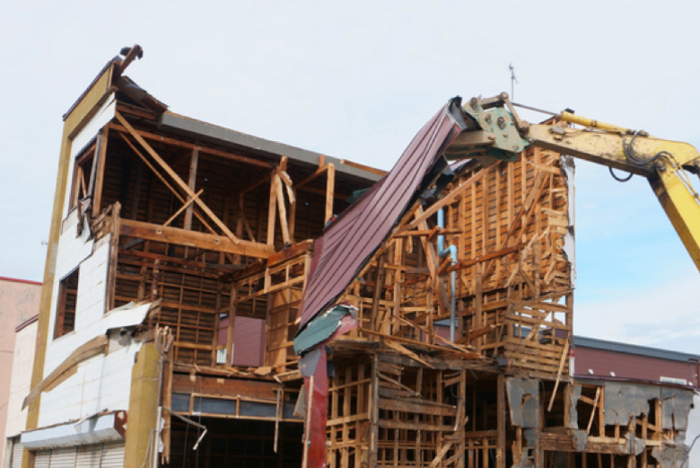

空き家にかかる固定資産税って？
1.固定資産税ってなに？？
自分名義や配偶者名義の土地・建物を所有する人にとっては必ず耳にしたことのある、「固定資産税」。つまり、家や建物を所有しているだけでかかってくる税金のことです。
住宅用の宅地のほかに、田畑、山林、牧場、店舗、工場、倉庫など、建物の用途によってその税率は変わってきますが、宅地にかけられる固定資産税は土地・建物ともに1.4%。
しかし、固定資産税は地方税に分類されますので、市町村によっては1.4%以上の税率を定めることもできます。
固定資産税には軽減税率や優遇処置が用意されていますので、それらの制度を利用して少しでも節税することが大切です。
2.固定資産税が算出されるタイミングは？
では、固定資産税の額が算出されるタイミング、納付通知が来る時期、支払う期限などのスケジュールを見ていきましょう。
| 1月1日 | その土地・建物にかかる固定資産税が自治体によって決められる |
| 4月～5月頃 | 納税通知書が郵送される |
| 6月 | |
| 9月 | |
| 12月 | |
| 2月 |
※分納の月は自治体によって例外もあり
1年の中でこのようなスケジュールで固定資産税にまつわる動きが決められています。毎年1月 1日にその土地と建物の状態を見て、固定資産税の額が決められていくということですね。
3.空き家を解体すると固定資産税が上がる？
現在の日本において、早急に取り組むべき大きな課題となっている「空き家問題」。解体されずに放置されたままになっている空き家が全国各地に年々急増しているという問題です。
なぜ解体せずに放置されてしまうのか？
それは、更地よりも建物が建っている状態のほうが固定資産税がかからないという日本の税制度によるものです。
では、空き家を解体して更地にすると実際にどれだけ固定資産税が上がってしまうのか、具体例を挙げて見ていきましょう。
空き家例）
-
課税評価額3,000万円（土地）
-
1,000万円（建物）
-
敷地面積100㎡
3,000万円×1/6（軽減税率が適用され1/6に減額 ）×1.4%＝7万円
1,000万円×0.3992×1.4%＝5万5,888円（築25年の経年減価補正率の場合）
＝12万5,888円
【更地にした場合】
3,000万円×1.4%
＝42万円
「空き家を解体すると固定資産税が6倍になる？！」なんて噂が出回っているようですが、それは間違いです。軽減税率である1/6が誤解され、「6倍」と勘違いしてしまう人が多いようですが、実際は3～4倍程度ということですね。
4.少しでも固定資産税を抑えるためのコツ
現在では、更地にするより空き家を残しておいたほうが固定資産税が軽くなってしまう税制度のため、積極的に解体工事をしない人が多く、「空き家問題」として大きな課題となってしまっています。
しかし、その事態をうけて各自治体では次々に軽減税率が空き家に適用されない法律が新しく作られており、いずれ多くの自治体が空き家を放置していると損をするような仕組みに変えていくことが予測できます。
その他にも、倒壊、放火、犯罪の温床など、空き家を放置しておくリスクは数多くあり、少しでも早く解体工事をしておくことをおすすめします。
では、更地にすると上がってしまう税率を抑えるためのコツはあるのでしょうか？
それは、解体工事のタイミングにポイントがあります。
先ほどご説明したように、その土地の固定資産税は毎年1月1日に決定されます。
つまり、1月1日に建物が存在していれば、12月31日までの1年間は軽減税率が適用されますので、解体工事をするなら1月2日以降が最もお得になるというわけです。
5.【まとめ】解体工事の見積りをするなら10月～11月がおすすめ！

日本の税制度は、節税をしにくいようにあえて分かりにくく作ってある、なんて説もよく耳にします。固定資産税に関しても苦手意識を抱いている人が多いでしょう。
こちらでは固定資産税について大まかに説明してきましたが、空き家にかけられる固定資産税を抑えるには、1月初旬に解体工事をすることがポイントということでした。
解体工事を始めるには、2～3ヵ月前には見積り準備を始める必要がありますので、見積りを取るベストのタイミングは10月～11月。
まさに今このタイミングとなりますので、空き家をお持ちの方は是非【くらそうね】までご相談ください。

工事会社からの営業電話やメールは一切しないので、
安心してお見積もり入力してください。